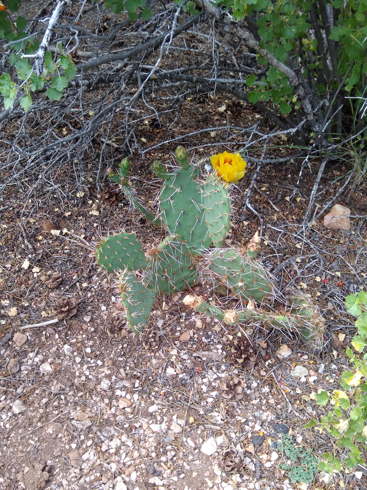

Wilkerson University

Welcome to Wilkerson University!
Welcome to the site of one of America's newest universities! We are the largest university in West Dakota and look forward to future growth! Whether you are interested in athletics, academics, or anything else, Wilkerson may be the place for you! Become a Cactus today!

Football vs. UNESW
Cactus Stadium
February 12

Macbeth
Wilkerson Playhouse
February 24-26

Withdraw Deadline
Registrar's Office
March 3
About WU
Wilkerson University was founded on January 30, 2020, so clearly has a long tradition of excellence in academics, arts, and athletics. With a thriving Division V athletics program and a #1 ranking in all of West Dakota, it would be foolish to not attend such a wonderful institution of higher education.
Wilkerson University was established on January 30, 2020.
#1
University in zip code 83902
#2
Division V Sports Program in America
Carl the Cactus is WU's mascot.

The Witches of the University of the North, South, East, and West
are the Wilkerson Cacti's biggest sports rival!